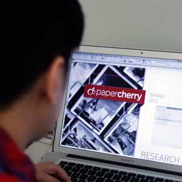

In an information-rich world, the scarce resource is attention.
– Herbert Simon, 1969 –
Team papercherry is developing the greeting card of the future. We're working with HP to envision and prototype how people will acknowledge each other on special occasions in an increasingly digital world.
During the summer semester, we will be developing a prototype based off of the insights we gained in the spring semester's research phase.
We started with a kick-off meeting in January, where we met with our clients from HP and went over HP's prior work and future vision for the project. As HP had already conducted research looking at the way people sent cards, we wanted to both confirm their findings and discover new potential international markets, younger audiences and males.
We used:
Semi-Structured Interviews
Relationship Maps
Contextual Inquiries (CI)
Guerilla Research
Our final presentation can be viewed here (PDF, 7mb).
Papercherry is a multidisciplinary team of Carnegie Mellon students with backgrounds ranging from history to computer science. They are supported by faculty from the Human-Computer Interaction Institute at Carnegie Mellon University and designers from MAYA Design. They are sponsored by HP.
Rachel Jakab
Project Manager
Rachel majored in history at Davidson and material culture at Edinburgh. She worked on an archaeological dig in Cyprus.
Nick Yeh
Design Lead
Nick has a Master of Arts from National Chiao Tung University and a Bachelor’s of Engineering from National Taiwan Normal University, where both trained him to be an independent observer and logical thinker with strong design skills.
Arun Ganesan
Research Lead
Arun has a Bachelor’s of Engineering in Computer Science from Anna University (India). During his recent experience as a user experience designer, he designed iOS and web apps.
Brian Yee
Tech Lead
Brian did his undergrad at Carnegie Mellon, where he majored in Information Systems. He's worked for IBM and Google.
Julien Altieri
Web & Documentation Lead
Julien has a Bachelor’s of Engineering and a Master’s Degree in Computer Science from Ecole Polytechnique in France where he focused on computer vision, image processing and networking.